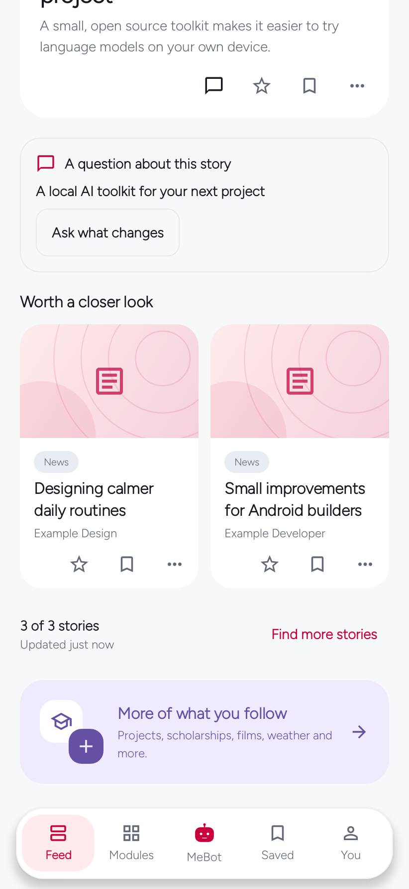
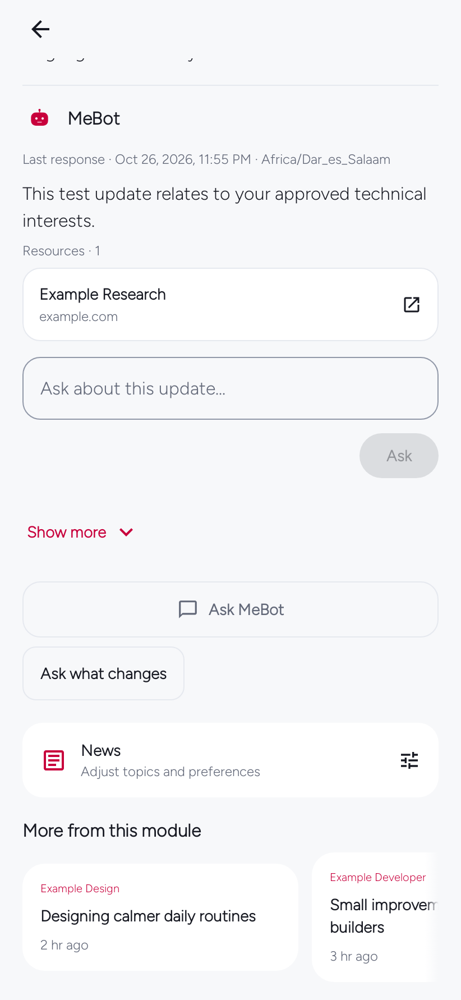
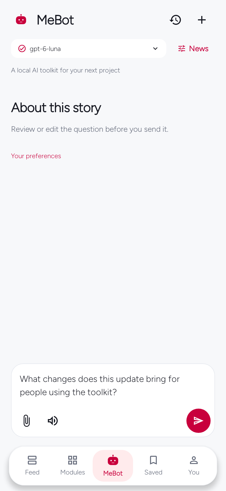
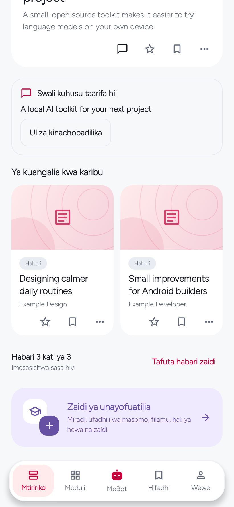
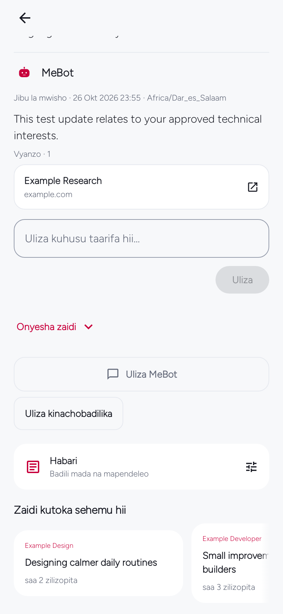
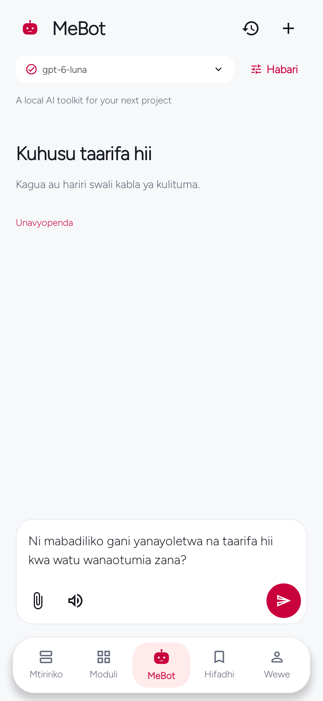

MeBot 0.9.5 · Story-flow guide
A useful question starts with the story.
MeBot keeps a direct path from reading to a thoughtful next question. Stories open in MeBot first, with their publisher still visible; the original source remains easy to open whenever you want it.
MeBot 0.9.5 is superseded by MeBot 0.9.6.
MeBot 0.9.5 remains an immutable historical signed release. A question sent before its story conversation was ready could land in a general chat instead of that story; wait for the conversation to open or update to 0.9.6.
A small prompt, in the right place
From feed to detail to MeBot.
A compact category label helps recognize what a story covers. Suggested questions stay attached to that story across the feed, its detail and the MeBot conversation. Choose a prompt to prepare an item-scoped draft, then review or edit it before you send anything.
Question suggestions never send automatically. The original source remains a secondary, immediate action from story detail or the card menu—no AI is required to open it. Local question suggestions remain available offline.












How to read these examples
All six images are native Android host captures using synthetic story titles, publisher labels, response text, preferences and provider configuration. Feed and detail images are intentionally scrolled to the suggested-question area. The MeBot images show the question before Send; choosing a suggestion has not sent a request. Kiswahili UI images retain English synthetic story text.
The selected model/provider label is fixture configuration, not proof of a live account, subscription, provider round trip or answer. These screenshots are not current articles, owner data or physical-phone acceptance evidence. See the capture notes and the separately maintained experience-first release notes.
The release retains package mebot.nguli.com and the existing 0.9.x production signing identity. Install over a production 0.9.x app; do not uninstall or clear data. Older 0.8.x builds are not an in-place update path.